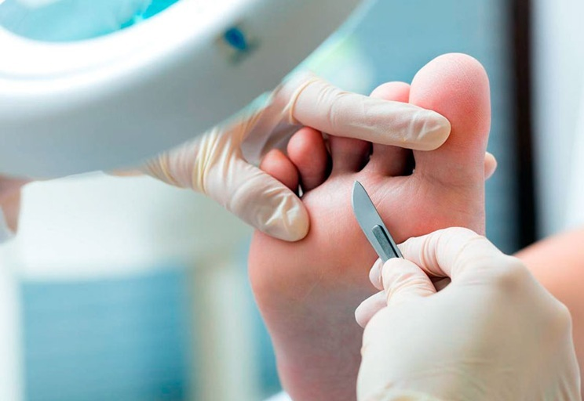
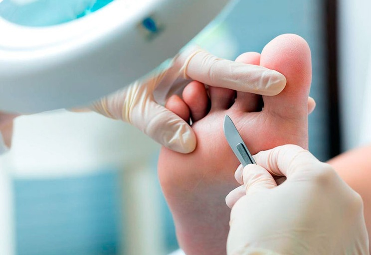

Reflexologia
La reflexología es una terapia alternativa que se basa en la idea de que ciertas áreas del pie, la mano y las orejas corresponden a órganos y sistemas específicos del cuerpo. Según esta práctica, al aplicar presión en estos puntos, se puede promover la salud y el bienestar general, aliviar tensiones y mejorar el funcionamiento de los órganos y sistemas correspondientes.La reflexología se utiliza como una técnica para ayudar a reducir el estrés, mejorar la circulación, aliviar dolores y tratar trastornos de salud como dolores de cabeza, insomnio, problemas digestivos, entre otros. Aunque no reemplaza el tratamiento médico convencional, muchas personas recurren a la reflexología como complemento a otros tratamientos para promover la relajación y mejorar su salud.

 

Nuestros servicios
- Reducción del Estrés y la Ansiedad
- Alivio de Dolores y Tensiones Musculares
- Alivio de Dolores de Cabeza y Migrañas
- Equilibrio del Sistema Endocrino
- Mejora de la Salud General y Energía